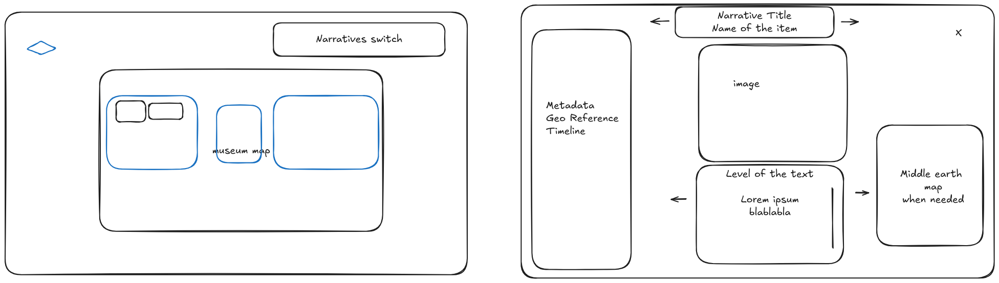

The Middle Earth Cabinet is a Project Website following the guidelines for the 2024-2025 a.y. valid for the exam "Information Modeling and Web Technologies".
This document has the purpose of providing a complete documentation of the work done. It urges to be comprehensive and extensive, describing every individual aspect of the website itself.
The selected audience for this website is, by design, diverse and the website itself is built to give to each and every user the tools to enforce this flexibility.
The three main groups described by the requirements include:
The functionality allowing users to adjust the length and complexity of the text for each exhibit across three levels per axis will be discussed in detail later. For now, it's important to understand that this feature allows for tailored information delivery.
This led us to work on a small description and metadata database described in JSON, for a total of 9 descriptions per exhibit.
This Website serves as an online guide and tour for the imaginary exhibition «The Middle Earth Cabinet». The Scope of the Website is therefore to provide the adequate informational content tailored for the target audience and presented in a streamlined and intuitive way, but also to be informative about the location of the exhibit and transparent about the curators.
The terminology of the documentation will make use of technical jargon and it will refer to common practices in a familiar way, confident that those who read it are knowledgeable enough to understand it.
Our About page is here for any information or support.
As mentioned before the goal is to obtain an easy to use and intuitive system that can be easily reproduced for a different exhibition. It tries to be compliant with the exam requirements and adds some facilities where needed to support its goals.
«The Middle Earth Cabinet» is hosted making use of Github Pages, starting from a repository hosted on one of the curators and developers github account.
The Website makes use of the "traditional" frontend stack, (HTML, CSS, JS). It tends to adopt a modular approach, that separates html pages, style and scripts on different files.
The requirements of the project don't comprehend a backend part development, the only "backend" part is assolved by the hosting system.
The only other consideration about backend is about internal data retrieval, the Project make use of an items.json file to retrieve the informational content to display for the exhibition.
The website structure is fairly simple having only one job in mind. Navigation is facilitated by the presence of recognizable buttons and an attempt to respect visual hyerarchy among the elements at screen.
Starting from the index/homepage it is possible to visit one of the informational pages (about, docs), and an highlighted access to the main feature of the website, "The Map" page, from which you can start exploring the collection.
flowchart LR
Homepage["Homepage"] --> n1["About"]
Homepage --> n3["Documentation"]
Homepage --> n4["The Map"]
n4 --> n5["Map Items*"]
This chart was realized using mermaid
* these are not pages but are still treated as relevant elements.
We tried to stick to the basic UI Design Principles without outlining our own requirements. We followed common sense regarding matters of readability and interaction facilities at user's disposal.
Is yet to be implemented! Not present in the requirements.
The pages are few enough to make it available for us to devise unique designs for each of them. Trying to retain a coherent aesthetic.
Consistent templates are present in:
The index/homepage is strongly inspired by The British Museum one, being this imaginary exhibition staged inside "The King's Library", the first series of rooms indexed in the Official Map of the aforementioned museum.
The homepage features:
The differences with the British Museum website are to be found in layout, we have of course fewer elements to deal with; and overflowing, we decided to have a static full-viewport homepage, while the BM site has to include many more elements below their bar and background video.
This is the page that guides the user through the exhibition, this
is a graph representation of the user interaction, this acts as a
"setup phase" that allows the user how they want to visit
and the difficulty of the descriptions. During this phase the user
is presented with two <dialog> elements.
flowchart LR
n1["Path Selection"] --> n2["Character Selection"] --> n3["King's Library Map and Exhibition"]
This chart was realized using mermaid
After the setup phase the user is able to explore the map in different ways:
A useful "Resume Journey" button will substitute the "Start Journey" one, and will make it possible to resume from the last item you selected.
Every Journey consists only of the selected items in that zone and will automatically reach an end when you get to the last one
Besides the map are available two buttons, one to return back to the homepage and another to visualize the british museum map, and a link that leads the user to the original source, in this view is also highlighted the actual exhibition location.
The process to realize the svg that allows the map to function was rather simple but required some work and refinements, the map was traced using the official map provided by the British Museum, at first using figma and then refined using inkscape.
It is implemented using the <svg> element in
html, and it was used to simplify the interaction scripts at work
that will be later described.
Each exhibit card follows the same template. The first set of information at display is the museal description of the item, adjustable per level and length through radio buttons. You can also access, with dedicated buttons, the available metadata and map for each item. The map is retrieved using leaflet and OpenStreetMap
In each card you can also find arrows to move from one item to the other without using the map to select each one of them.
The Informational page give access to the relevant information for those interested in the project and its developers:
All the relevant javascript code is contained into
scripts/script.js, being all the pages except "The
Map" page static it is relevant only for the functionalities
described in paragraph 3.2.2 and 3.2.3.
Javascript is used for all the interactive functionality on the
website, everything is managed client side. The script loads content
coming from data/items.json, and adjusts it according
to the choices made by the user during the setup phase. Javascript
is also used to set the variables during the setup phase and to make
them available throughout the session.
The functions provided regulate the behavior of the setup dialogs, of the British Museum Map dialog, and the item card content retrieval and displaying.
The Styling and Theming is full of small references to Tolkien's work. We'll try to outline them in this paragraph, it is a simple theming but we deem effective enough to please the eye.
As mentioned before the theme chosen for the homepage traces back to the British Museum Homepage, but we decided to add our own video background, selecting and intertwining real life clips of Tolkien and scenes from the movie, this is intended to create a visual reference to our two paths, the origin and the legacy.
The map contains a total different approach, we decided to adopt a colorful and yet simple style for it.
The main colors hint to Tolkien's world and life:
The buttons are highlighted when hovered on and are rounded and solid, this creates a more modern look.
The map style is simple and vectorial, tuned for readability and to provide good contrast between background, map borders and items at display.
The background is the map of Middle Earth itself, blurred enough to avoid distraction.
In the "Adventurers" setup and the about page there are images from the film, to provide a sort of early 2000s reminiscence, when magazines, scrapbooks and archaic html websites were popular.
As mentioned earlier in this documentation the data for the items is
provided via json, the data is still sparse and need to
be cleared yet. We tried to provide a basic structure for the item
cards and a small set of metadata information but it was truly a
challenge to keep it consistent.
The data schema can be easily adopted as is, and can be reproduced for other use cases. A further development could be redacting an effective JSON schema.
Every Item is described using the following properties:

This is the only available mockup, made at the start of the development, even if we didn't follow up and update
The biggest challenge was probably the unexpected strict and protective stance that The Tolkien Estate took towards any trademark, copyright and product slightly related to Tolkien and his imaginarium. It was difficult even to find the correct links to the images displayed in the imaginary exhibit and to gather the few available metadata for each time. The reason is probably related to how popular and dear this world is, making it perfectly sustainable to avoid any sort of information leak or sharing.
Future developments could involve:
This software is released under the MIT License.
This is a university project and its purpose is purely educational.
© 2025 The Tolkien Estate, Wētā Workshop. All Rights Reserved.